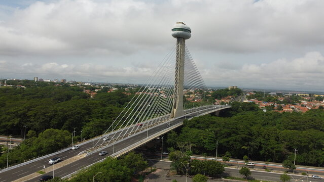
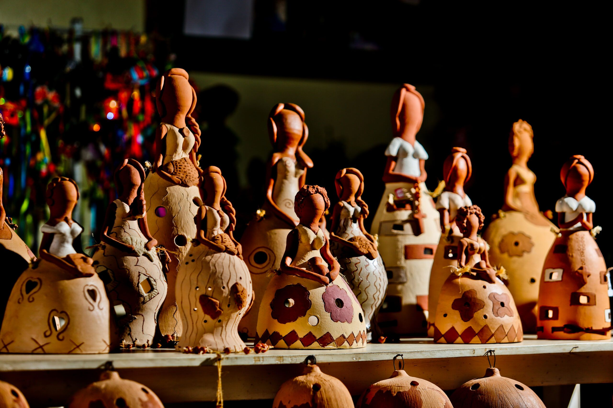
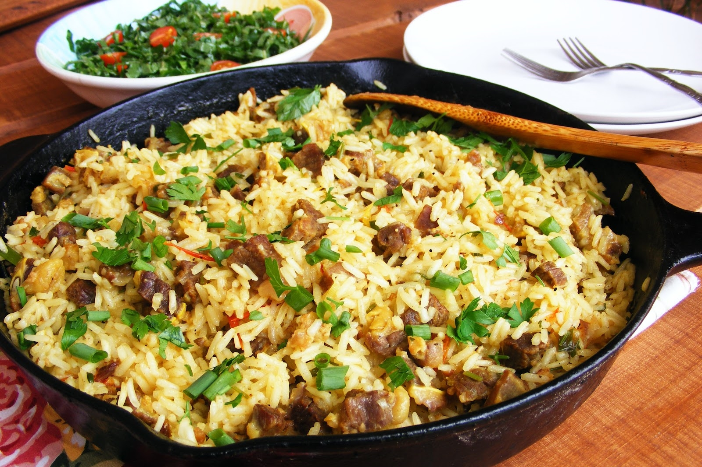
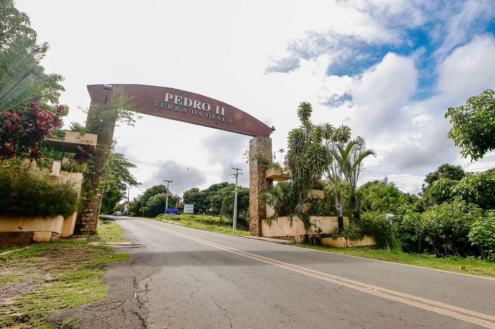
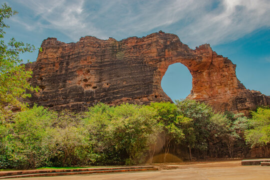
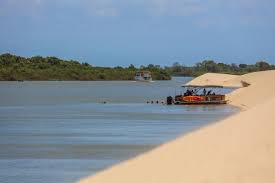

Conectando cultura, turismo e tradição.

Conheça artesãos locais e suas histórias.

Experimente comidas típicas piauienses.

Descubra festas, danças e tradições.


Nosso projeto fortalece a economia criativa, valoriza a cultura local e amplia a visibilidade do turismo cultural do Piauí.